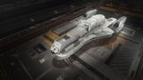

Макс. пассажиров (оценка)
~100
Готовый пассажирский лайнер Saud Kruger, настроенный для экскурсионных рейсов Робиго – Сириус. Бонус комфорта и доступ к средним площадкам дают ему преимущество перед переоборудованными кораблями по выручке с места. Он садится там, где большие Orca и Beluga не могут. Поставляется со штатными модулями класса E. Улучшайте основные модули без замены и заполняйте свободные отсеки: так раскроете потенциал и сохраните бесплатное восстановление.

Оценка пригодности корабля от 1 до 100 учитывает его полностью улучшенную сборку и сравнивает её с другими кораблями в этой роли. Подробнее: как оцениваются корабли.
Lynx Highliner (ваш KA-16M) — готовый средний лайнер Saud Kruger. Специализированный пассажирский корабль садится на средних площадках, получает бонус комфорта Saud Kruger и настроен под экскурсионный маршрут Робиго – Сириус, один из самых прибыльных в Пузыре. Как специализированный лайнер он даёт более высокий тариф и меньше жалоб, а средняя площадка открывает станции, на которых большие Orca и Beluga не садятся.
В готовой комплектации стоят штатные модули класса E и скромный набор кают (в вашей текущей сборке четыре каюты экономкласса примерно на 48 пассажиров). Штатные модули нельзя продать за деньги или положить на склад. Улучшайте основные модули на месте и ставьте лучшие каюты и оборудование в свободные отсеки, не заменяя штатные модули: так сохранится бесплатное восстановление. После доработок это отличный средний лайнер: универсальный, комфортный и подходящий для рейсов в Робиго, которые вы уже выполняете.
Премиальные пассажирские рейсы со средними площадками: экскурсии Робиго – Сириус (основная задача), дорогие VIP-задания в пункты со средними площадками и разнообразные круизные маршруты, недоступные большим лайнерам.
Четыре достоинства Lynx как среднего лайнера:
Берёт меньше пассажиров, чем большой лайнер Beluga, а штатные модули готовой комплектации относятся к классу E. Чтобы раскрыть потенциал, нужны улучшения основных модулей и лучшие каюты в свободных отсеках. FSD и текущая сборка дают лишь около 16 св. лет дальности. Lynx хорош на маршруте в Робиго как специализированный лайнер со средней площадкой. По чистой вместимости выигрывает Beluga .
Средний специализированный лайнер Saud Kruger лидирует по комфорту и доступности средних площадок, имея около 100 мест. Вершины рейтинга он не достигает лишь из-за меньшей вместимости, чем у Beluga's ~184.
Итоговая 90/100 — итоговая оценка по критериям пассажирской роли в порядке важности. Для каждого критерия есть вес (его доля из 100). Баллы по нему зависят от того, как корабль показал себя на фоне остальных. Сумма баллов даёт итоговую оценку.
| Критерий | Баллы | Почему столько |
|---|---|---|
| Вместимость и классы кают | 31/35 | После оснащения — около 100 мест экономкласса в дополнительных отсеках 6/5/5/5/4 против штатных примерно 48. Это сильный результат для специализированного лайнера: больше, чем у Dolphin (~42), но меньше, чем у Beluga (~184) и даже переоборудованных средних кораблей вроде Python (~146). |
| Комфорт | 20/20 | Бонус комфорта специализированного лайнера Saud Kruger означает премиальную оплату и минимум жалоб. Прибыль с места выше, чем у переоборудованных Cutter, Anaconda и Python. Комфорт — его главное достоинство, сравнимое только с Beluga, Orca и Dolphin. |
| Дальность прыжка и бак | 17/20 | Улучшенный FSD с SCO размера 5 («Увеличенная дальность» и «Управление массой») прыгает примерно на 38 св. лет вместо штатных примерно 16 св. лет. Бак фиксированный, 32 т (5C). Для короткого маршрута Робиго — Сириус достаточно, но на фоне дальнобойных переоборудованных кораблей вроде Krait Phantom показатель обычный. |
| Щит и безопасность | 12/15 | Двухконтурный щит 6C («Усиленный» и «Быстрая зарядка») и усилитель 0A с усиленной конструкцией защищают пассажиров, но запас МДж намного меньше, чем у Imperial Cutter. Два импульсных лазера 1F — лишь номинальная оборона. |
| Размер площадки и стоимость | 10/10 | Средняя площадка позволяет садиться на аванпостах, недоступных большим Orca и Beluga. Ранг и разрешение не нужны. Корпус около 68 млн кр. (полное оснащение около 85 млн и выше, страховка около 3.5 млн) стоит умеренно. При улучшении модулей на месте бесплатное восстановление сохраняется. |
| Взвешенный итог | 90/100 | Эта сумма совпадает с общей оценкой корабля в этой роли. |
Вес критерия отражает приоритеты авторов гайда, а не формулу игры. Длина полосы показывает, какую долю от максимума корабль набрал по этому критерию. Подробнее: как оцениваются корабли.
Таблицы сравнивают корабли именно для перевозки пассажирови разделяют их по размеру посадочной площадки. Столбец Вместимость кают показывает общее число мест под каюты в дополнительных отсеках; рейтинг от 1 до 100 сопоставим с остальными досье.
| Корабль | Класс | Вместимость кают | Плюсы и минусы | Оценка |
|---|---|---|---|---|
| Lynx Highliner этот | Средняя | — | — отправная точка для сравнения | 90 |
| Python | Средняя | ~294 т | Щит; площадка/ценаНиже оценка; комфорт | 70 |
| Krait Phantom | Средняя | ~190 т | Дальность; площадка/ценаНиже оценка; комфорт | 64 |
| Корабль Asp Explorer | Средняя | ~130 т | Площадка и цена; дальностьНиже оценка; комфорт | 60 |
| Mandalay | Средняя | ~154 т | Площадка и цена; дальностьНиже оценка; комфорт | 54 |
| Corsair | Средняя | ~318 т | Каюты; щитНиже оценка; комфорт | 50 |
| Krait Mk II | Средняя | ~230 т | Каюты; дальностьНиже оценка; площадка и цена | 46 |
| Type-8 Transporter | Средняя | ~406 т | Каюты; площадка и ценаНиже оценка; комфорт | 46 |
Оценены 8 пассажирских кораблей для средних площадок. Лидирует Lynx Highliner (90). Всем этим соперникам подходят те же площадки: именно их стоит сравнивать при покупке.
| Корабль | Класс | Вместимость кают | Плюсы и минусы | Оценка |
|---|---|---|---|---|
| Корабль Beluga Liner | Большая | ~370 т | Оценка выше; каюты; комфортДальность | 95 |
| Imperial Cutter | Большая | ~794 т | Каюты; щитНиже оценка; комфорт | 89 |
| Orca | Большая | ~194 т | Комфорт; площадка и ценаОценка ниже; дальность | 88 |
| Корабль Anaconda | Большая | ~470 т | Дальность; каютыНиже оценка; комфорт | 82 |
| Imperial Clipper | Большая | ~250 т | Щит; дальностьНиже оценка; комфорт | 64 |
| Корабль Caspian Explorer | Большая | ~434 т | Каюты; дальностьНиже оценка; площадка и цена | 60 |
| Корабль Type-7 Transporter | Большая | ~310 т | Каюты; площадка и ценаНиже оценка; комфорт | 56 |
| Корабль Type-9 Heavy | Большая | ~790 т | Каюты; площадка и ценаНиже оценка; комфорт | 56 |
| Panther Clipper Mk II | Большая | ~662 т | Каюты; щитНиже оценка; площадка и цена | 48 |
Оценены 9 больших пассажирских кораблей. Лидирует Корабль Beluga Liner (95). Они превосходят Asp по показателям, но требуют больших площадок и бюджета.
| Корабль | Класс | Вместимость кают | Плюсы и минусы | Оценка |
|---|---|---|---|---|
| Dolphin | Малая | ~88 т | Комфорт; площадка и ценаОценка ниже; каюты | 80 |
| Imperial Courier | Малая | ~34 т | Площадка и цена; щитОценка ниже; каюты | 52 |
В сегменте пассажирских кораблей для малой площадки (2 оценённых) лидирует Dolphin (80). Это более дешёвые корабли с меньшими площадками. По цифрам они выгоднее, но относятся к другому классу площадок.
Lynx поставляется как готовый лайнер стоимостью около 68 млн кр. с недорогими штатными модулями класса E (~1.3 млн кр.) и страховкой около 3.5 млн кр. Улучшение основных модулей на месте, установка лучших кают и более прочного щита в свободные отсеки поднимают практическую стоимость выше 85 млн кр.
Главный источник дохода — рейсы в Робиго: дорогие экскурсионные задания на коротком прибыльном маршруте, где помогают бонус лайнера и средняя площадка. Готовая комплектация позволяет зарабатывать с первого дня, а дальнейшее оснащение повышает возможности.
Специализированный лайнер, готовый к прибыльному маршруту Робиго – Сириус. Зарабатывает с первого дня, а усиление основных модулей и заполнение свободных отсеков каютами улучшает результат.
Lynx Highliner продаётся в готовой комплектации за ARX. Штатные модули класса E продаются за 0 кр., их нельзя хранить или переносить. Однако инженерное улучшение на месте не лишает бесплатного восстановления. Не заменяйте штатные модули: добавляйте оборудование в свободные отсеки, а установленные основные модули улучшайте на месте.
На практике улучшайте на месте штатные FSD, маневровые двигатели и энергетическую установку ради дальности и подвижности, ставьте лучшие каюты в свободные дополнительные отсеки и добавьте более прочный щит. Так сохранится бесплатное восстановление, а штатный лайнер станет полноценным кораблём для Робиго.
| Правило готовой комплектации | Что это значит для Lynx |
|---|---|
| Штатные модули продаются за 0 кр. | Штатные модули Lynx класса E нельзя продать за деньги, хранить на складе или переносить. Снимать их нет смысла. |
| Улучшение на месте сохраняет бесплатное восстановление | Доработка штатных основных модулей в дистанционной мастерской не лишает бесплатного восстановления. Улучшайте их там, где они стоят. |
| Добавляйте модули только в свободные отсеки | Поставьте лучшие каюты, щит и внешнее оборудование в пустые отсеки. Не заменяйте штатные модули. |
| Результат | Полностью оснащённый и улучшенный Lynx с сохранённым бесплатным восстановлением. Так стоит дорабатывать любую готовую комплектацию. |
Не продавайте и не заменяйте штатные модули. Улучшайте их на месте и ставьте лучшие каюты и щит в пустые отсеки. Тогда лайнер станет сильнее и не потеряет бесплатное восстановление.
Lynx — готовый средний лайнер Saud Kruger. В начальной сборке штатные основные модули класса E, щит размера 5 и четыре каюты экономкласса (~48 пассажиров). В сборке класса A основные модули повышаются до A, а в дополнительные отсеки ставятся двухконтурный щит и каюты эконом-, бизнес-, первого класса и люкс. Инженерная сборка добавляет дальность, подвижность и прочность щита. Улучшайте штатные модули на месте через дистанционную мастерскую, не продавая их: так сохраняется бесплатное восстановление.
| Отсек | Начальная · только покупка | Класс A · без улучшений | С инженерными улучшениями | Примечания |
|---|---|---|---|---|
| Оружейные крепления | ||||
| Среднее 1 | 1F Импульсный лазер (неподвижный) | 1F Импульсный лазер (неподвижный) | G5 Эффективный + Отвод тепла | «Эффективный» уменьшает нагрев; «Отвод тепла» сбрасывает лишнее тепло. |
| Среднее 2 | 1F Импульсный лазер (неподвижный) | 1F Импульсный лазер (неподвижный) | G5 Эффективный + Отвод тепла | «Эффективный» уменьшает нагрев; «Отвод тепла» сбрасывает лишнее тепло. |
| Внешние крепления | ||||
| Крепление 1 | — | 0A Усилитель щита | G5 Усиленная конструкция + Суперконденсаторы | Усилитель щита повышает запас МДж двухконтурного щита. Усиленная конструкция — самый дешёвый способ заметно повысить безопасность пассажиров. |
| Крепление 2 | — | 0I Теплоотводная катапульта | G1 Дополнительный боезапас (без экспериментального эффекта) | Необязательно. Дополнительный боезапас даёт больше теплоотводов. Они снимают нагрев при скрытном ходе и помогают сбросить температуру. |
| Основные модули | ||||
| Обшивка | Лёгкий сплав | Лёгкий сплав | Облегчение 5-й ступени (без экспериментального эффекта) | |
| Энергетическая установка | 5E Энергетическая установка | 5A Энергетическая установка | G5 Низкие выбросы + Рассеивание тепла | Класс A даёт запас мощности для щита и кают. «Низкие выбросы» уменьшают нагрев, а «Рассеивание тепла» отводит остаточное тепло. |
| Маневровые двигатели | 6E Маневровые двигатели | 6A Маневровые двигатели | G5 Грязная настройка двигателей + Форсированные двигатели | Класс A и Грязная настройка двигателей позволяют тяжёлому лайнеру уходить от угроз на форсаже. |
| Рамочно-сместительный двигатель (FSD) | 5E Рамочно-сместительный двигатель (FSD) | 5A Рамочно-сместительный двигатель (FSD) | G5 «Увеличенная дальность» + Управление массой | Двигатель SCO класса A; «Увеличенная дальность» и «Управление массой» повышают дальность прыжка до маяков Робиго. |
| Система жизнеобеспечения | 6E Система жизнеобеспечения | 6D Система жизнеобеспечения | G5 Облегчение (без экспериментального эффекта) | Класс D уменьшает массу; Облегчение снижает её ещё сильнее; у системы жизнеобеспечения нет экспериментального эффекта. |
| Распределитель энергии | 5E Распределитель энергии | 5A Распределитель энергии | G5 Упор на двигатели + Сверхпроводящие каналы | Поставьте класс A, затем Упор на двигатели и «Суперпроводники», чтобы держать форсаж заряженным для быстрого отхода. |
| Сенсоры | 3E Сенсоры | 3D Сенсоры | G5 Облегчение (без экспериментального эффекта) | Поставьте класс D и облегчите сенсоры. Лайнеру не нужна дальность сенсоров, лучше сэкономить массу. |
| Топливный бак | 5C Топливный бак | 5C Топливный бак | (нет чертежа улучшения) | Штатный бак на 32 т. Ёмкость фиксирована и не улучшается у инженеров. |
| Дополнительные отсеки | ||||
| Размер 6 | 5E Генератор щита | 6C Генератор двухконтурного щита | G5 Усиленный + Быстрая зарядка | Двухконтурный щит в отсеке размера 6 быстро восстанавливается под огнём. «Усиленный» увеличивает запас МДж, а «Быстрая зарядка» ускоряет восстановление ради безопасности пассажиров. |
| Размер 5 | 5E Пассажирская каюта экономкласса | 5C Пассажирская каюта первого класса | (нет чертежа улучшения) | Каюта первого класса для дорогих VIP-заказов. Каюты не улучшаются у инженеров. |
| Размер 5 | 5E Пассажирская каюта экономкласса | 5B Каюта класса люкс | (нет чертежа улучшения) | Люкс даёт самый высокий VIP-тариф в Робиго: мест меньше всего, прибыль с пассажира выше всего. |
| Размер 5 | 4E Пассажирская каюта экономкласса | 5E Пассажирская каюта экономкласса | (нет чертежа улучшения) | Экономкласс даёт дополнительные места для массовых рейсов вместе с VIP-каютами. |
| Размер 4 | 4E Пассажирская каюта экономкласса | 4D Пассажирская каюта бизнес-класса | (нет чертежа улучшения) | Бизнес-каюта сочетает комфорт и вместимость в отсеке размера 4. |
| Размер 2 | 1E Помощь в суперкруизе | 1E Помощь в суперкруизе | (нет чертежа улучшения) | Помощь в суперкруизе упрощает долгие перелёты у Робиго. Для навигационных помощников нет чертежей. |
| Размер 1 | 1E Стыковочный компьютер | 1E Стыковочный компьютер | (нет чертежа улучшения) | Улучшенный стыковочный компьютер берёт на себя посадку и взлёт. Инженерных улучшений нет. |
| Планировщики и экспорт | ||||
| Открыть в Coriolis | открыть | открыть | открыть | Открывает сборку на coriolis.io. |
| Открыть в EDSY | открыть | открыть | открыть | Открывает сборку на edsy.org. |
| Скопировать SLEF | Копирует выбранную сборку в формате экспорта оснащения корабля (SLEF). | |||
Начальный вариант — Lynx при поставке: штатные модули класса E, четыре каюты экономкласса и около 48 пассажиров. После оснащения он получает набор VIP-кают под двухконтурным щитом, а основные модули улучшаются на месте ради дальности и малого нагрева. Сочетайте первый класс и люкс для дорогих заказов Робиго, эконом — для объёма.
Lynx поставляется в сборе, поэтому в начальном столбце штатное оснащение, ничего докупать не нужно. На корпусе стоит штатный лёгкий сплав обшивки. Корабль несёт два импульсных 1F лазера (неподвижных) на средних креплениях, все основные модули класса E (5E Энергетическая установка, 6E Маневровые двигатели, 5E Рамочно-сместительный двигатель (FSD), 6E Система жизнеобеспечения, 5E Распределитель энергии, сенсоры 3E), 5C топливный бак, щит 5E (генератор щита) и четыре каюты экономкласса (две размера 5, две размера 4, около 48 пассажиров), а также помощь в суперкруизе 1E и стыковочный компьютер 1E.
Оба внешних крепления на этом этапе пусты (—): ни усилителя щита , ни теплоотводной катапульты до перехода на класс A. Даже штатный корабль зарабатывает на маршруте Робиго.
Штатные модули, включая Обшивка , не приносят денег при продаже и не хранятся на складе. Улучшайте основные модули и броню на месте, не заменяя их: бесплатное восстановление сохранится.
Порядок оснащения: улучшайте на месте и заполняйте свободные отсеки.
Lynx зарабатывает с первого дня. Улучшайте штатные основные модули на месте, ставьте лучшие каюты, щит и внешние модули в свободные отсеки, ничего штатного не продавайте. Оставьте лёгкий сплав обшивки : лайнеру нужна меньшая масса, а не тяжёлая броня. В инженерной сборке установите G5 «Облегчённая броня» для повышения прочности без прибавки массы.
Схема пассажирских улучшений Lynx для штатных основных модулей на месте. Felicity Farseer с максимальным уровнем доступа дорабатывает FSD; закрепите чертежи для дистанционных улучшений G1→G5. Это подходит для готовых комплектаций, поскольку менять модули не нужно.
| Модуль | Чертёж | Экспериментальный эффект | Инженер |
|---|---|---|---|
| Энергетическая установка (5) | Низкие выбросы (5-я ступень) | Рассеивание тепла | Hera Tani |
| Маневровые двигатели (6) | Грязная настройка двигателей (5-я ступень) | Форсированные двигатели | Professor Palin / Mel Brandon |
| Рамочно-сместительный двигатель (FSD) (5) | «Увеличенная дальность» (5-я ступень) | Управление массой | Felicity Farseer |
| Система жизнеобеспечения (6) | Облегчение (5-я ступень) | (нет) | Etienne Dorn |
| Распределитель энергии (5) | Упор на двигатели (5-я ступень) | Сверхпроводящие каналы | The Dweller |
| Сенсоры (3) | Облегчение (5-я ступень) | (нет) | Bill Turner / Juri Ishmaak |
| Генератор щита (6) | Усиленный (5-я ступень) | Быстрая зарядка | Lei Cheung |
| Усилитель щита | Усиленная конструкция (5-я ступень) | Суперконденсаторы | Didi Vatermann |
| Обшивка | Облегчение (ступень 5) | — | Selene Jean |
Небольшие затраты: стандартные пассажирские чертежи (FSD, маневровые двигатели, энергетическая установка и щит) применяются на месте через дистанционную мастерскую. Это удобно для готового корабля. С полным запасом материалы надо только потратить, не собирать. При необходимости уточните расход по чертежам.
Ориентировочные показатели для трёх сборок. Точный результат зависит от оснащения:
| Показатель | Начальная | Класс A | С инженерными улучшениями |
|---|---|---|---|
| Пассажиры (после оснащения) | около 48 (штатно) | ~80 | ~100 |
| Макс. прыжок, св. лет | около 16 (штатно) | ~28 | ~38 |
| Обшивка | Лёгкий сплав (штатно) | Лёгкий сплав | G5 «Облегчённая броня» |
| Бонус лайнера за комфорт | да | да | да |
| Посадочная площадка | средняя | средняя | средняя |
| Бесплатное восстановление | да (готовая комплектация) | да | да (если основные модули и броня улучшены на месте) |
В штатной сборке Lynx возит около 48 пассажиров примерно на 16 св. лет со штатными модулями и обшивкойиз лёгкого сплава. После оснащения (улучшения на месте, лучшие каюты, полноценный щит и G5 «Облегчённая броня», которая даёт прочность без лишней массы) он с комфортом берёт около 100 пассажиров, садится на средних площадках и дотягивает до маяков Робиго. Бонус лайнера и средняя площадка делают его гибким источником дохода.
Экскурсии Робиго – Сириус — его основной маршрут и один из самых прибыльных в Пузыре. Средняя площадка и бонус лайнера дают возможность зарабатывать и на разнообразных VIP- и туристических рейсах.
Lynx Highliner — ваш лайнер для Робиго: готовый специализированный средний пассажирский корабль с бонусом комфорта Saud Kruger, гибкой средней площадкой и оснащением под один из самых прибыльных экскурсионных маршрутов Пузыря. Он берёт меньше пассажиров, чем гигантский Beluga , и поставляется со штатными модулями. Но улучшения на месте, лучшие каюты и полноценный щит делают его удобным источником дохода с бесплатным восстановлением. Он садится там, где большие лайнеры не могут.
Цифры в статье сверены авторами оригинала с источниками ниже.